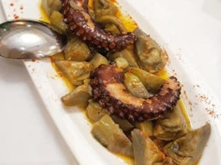

🌿 Alcachofas
De nuestra huerta y de la Vega Baja. A la plancha, rellenas, con almejas o con conejo. En temporada, raciones para 4.
Casa de campo · Vega Baja
Una antigua casa de campo restaurada en el Camino de Catral, con su huerta al lado. Aquí mandan la alcachofa de la Vega Baja, el marisco del día y la mesa larga. La cocina la lleva hoy Esther; el sitio empezó hace décadas con la abuela Ángeles.

Premio de Turismo Almoradí a la fundadora del Restaurante Angelín, por su trayectoria gastronómica en Almoradí. Una vida de cocina huertana al servicio de la mesa.
Fuente: Turismo Almoradí — Muestra de la Alcachofa.
El secreto del sitio
Las cristaleras del salón dan al campo. Cuando cae la tarde se encienden las luces fuera y se ve la huerta — la misma que cultivamos y que entra cada día en la cocina. Comer aquí es comer mirando lo que tienes en el plato.
“A través de las cristaleras se ve su huerta iluminada, eso es genial.”— Reseña de Tripadvisor
En qué nos esmeramos
Lo que servimos
De nuestra huerta y de la Vega Baja. A la plancha, rellenas, con almejas o con conejo. En temporada, raciones para 4.
Gambas, langostinos, almejas, cigalas, mariscada de la casa. Lo que ese día tiene la lonja, lo que ese día está bien.
Trabajo de despensa propio. Encurtidos, semiconservas, variados — los pequeños bocados para arrancar la mesa.
Manitas de cerdo, ternera en salsa, callos, pelotas. Menú del día a buen precio en la barra del bar.
Celebraciones
Comuniones, cumpleaños, comidas de empresa, comidas de hermandades. Tenemos comedor privado y servicio a la carta o menú predefinido. También llevamos la cocina a domicilio — pregunta por nuestro catering.
Y los domingos, mesa larga para familias con descuento especial.
En el mapa gastronómico
Angelín forma parte de la Asociación de Restaurantes de Almoradí y participa cada año en las Muestras y el Congreso Nacional de la Alcachofa. Si vienes en marzo, pregunta por el menú de Jornadas.